In this hands-on exercise, I learn how to perform geographical segmentation by using appropriate R packages, perform cluster analysis and visualise clustering results.
In geobusiness and spatial policy, it is a common practice to delineate the market or planning area into homogeneous regions by using multivariate data. In this hands-on exercise, we are interested to delineate Shan State, Myanmar into homogeneous regions by using multiple Information and Communication technology (ICT) measures, namely: Radio, Television, Land line phone, Mobile phone, Computer, and Internet at home.
Myanmar Township Boundary Data (i.e. myanmar_township_boundaries) : This is a GIS data in ESRI shapefile format. It consists of township boundary information of Myanmar. The spatial data are captured in polygon features.
Shan-ICT.csv: This is an extract of The 2014 Myanmar Population and Housing Census Myanmar at the township level.
Both data sets are download from Myanmar Information Management Unit (MIMU)
The following R packages are used:
Spatial data handling: sf, rgdal and spdep
Attribute data handling: tidyverse, especially readr, ggplot2 and dplyr
Choropleth mapping: tmap
Multivariate data visualisation and analysis: coorplot, ggpubr, and heatmaply
Cluster analysis: cluster
packages = c('rgdal', 'spdep', 'tmap', 'sf', 'ggpubr', 'cluster', 'factoextra', 'NbClust', 'heatmaply', 'corrplot', 'psych', 'tidyverse', 'pagedown')
for (p in packages){
if(!require(p, character.only = T)){
install.packages(p)
}
library(p,character.only = T)
}
In this section, you will import Myanmar Township Boundary GIS data and its associated attribute table into R environment.
The Myanmar Township Boundary GIS data is in ESRI shapefile format. It will be imported into R environment by using the st_read() function of sf.
shan_sf <- st_read(dsn = "data/geospatial", layer = "myanmar_township_boundaries") %>%
filter(ST %in% c("Shan (East)", "Shan (North)", "Shan (South)"))
Reading layer `myanmar_township_boundaries' from data source
`C:\nxinyan\IS415\IS415_blog-3\_posts\2021-10-26-hands-on-exercise-8\data\geospatial'
using driver `ESRI Shapefile'
Simple feature collection with 330 features and 14 fields
Geometry type: MULTIPOLYGON
Dimension: XY
Bounding box: xmin: 92.17275 ymin: 9.671252 xmax: 101.1699 ymax: 28.54554
Geodetic CRS: WGS 84View the content of the newly created shan_sf simple features dataframe
shan_sf
Simple feature collection with 55 features and 14 fields
Geometry type: MULTIPOLYGON
Dimension: XY
Bounding box: xmin: 96.15107 ymin: 19.29932 xmax: 101.1699 ymax: 24.15907
Geodetic CRS: WGS 84
First 10 features:
OBJECTID ST ST_PCODE DT DT_PCODE TS
1 163 Shan (North) MMR015 Mongmit MMR015D008 Mongmit
2 203 Shan (South) MMR014 Taunggyi MMR014D001 Pindaya
3 240 Shan (South) MMR014 Taunggyi MMR014D001 Ywangan
4 106 Shan (South) MMR014 Taunggyi MMR014D001 Pinlaung
5 72 Shan (North) MMR015 Mongmit MMR015D008 Mabein
6 40 Shan (South) MMR014 Taunggyi MMR014D001 Kalaw
7 194 Shan (South) MMR014 Taunggyi MMR014D001 Pekon
8 159 Shan (South) MMR014 Taunggyi MMR014D001 Lawksawk
9 61 Shan (North) MMR015 Kyaukme MMR015D003 Nawnghkio
10 124 Shan (North) MMR015 Kyaukme MMR015D003 Kyaukme
TS_PCODE ST_2 LABEL2 SELF_ADMIN ST_RG
1 MMR015017 Shan State (North) Mongmit\n61072 <NA> State
2 MMR014006 Shan State (South) Pindaya\n77769 Danu State
3 MMR014007 Shan State (South) Ywangan\n76933 Danu State
4 MMR014009 Shan State (South) Pinlaung\n162537 Pa-O State
5 MMR015018 Shan State (North) Mabein\n35718 <NA> State
6 MMR014005 Shan State (South) Kalaw\n163138 <NA> State
7 MMR014010 Shan State (South) Pekon\n94226 <NA> State
8 MMR014008 Shan State (South) Lawksawk <NA> State
9 MMR015013 Shan State (North) Nawnghkio\n128357 <NA> State
10 MMR015012 Shan State (North) Kyaukme\n172874 <NA> State
T_NAME_WIN
1 rdk;rdwf
2 yif;w,
3 &GmiH
4 yifavmif;
5 rbdrf;
6 uavm
7 z,fcHk
8 &yfapmuf
9 aemifcsdK
10 ausmufrJ
T_NAME_M3
1 <U+1019><U+102D><U+102F><U+1038><U+1019><U+102D><U+1010><U+103A>
2 <U+1015><U+1004><U+103A><U+1038><U+1010><U+101A>
3 <U+101B><U+103D><U+102C><U+1004><U+1036>
4 <U+1015><U+1004><U+103A><U+101C><U+1031><U+102C><U+1004><U+103A><U+1038>
5 <U+1019><U+1018><U+102D><U+1019><U+103A><U+1038>
6 <U+1000><U+101C><U+1031><U+102C>
7 <U+1016><U+101A><U+103A><U+1001><U+102F><U+1036>
8 <U+101B><U+1015><U+103A><U+1005><U+1031><U+102C><U+1000><U+103A>
9 <U+1014><U+1031><U+102C><U+1004><U+103A><U+1001><U+103B><U+102D><U+102F>
10 <U+1000><U+103B><U+1031><U+102C><U+1000><U+103A><U+1019><U+1032>
AREA geometry
1 2703.611 MULTIPOLYGON (((96.96001 23...
2 629.025 MULTIPOLYGON (((96.7731 21....
3 2984.377 MULTIPOLYGON (((96.78483 21...
4 3396.963 MULTIPOLYGON (((96.49518 20...
5 5034.413 MULTIPOLYGON (((96.66306 24...
6 1456.624 MULTIPOLYGON (((96.49518 20...
7 2073.513 MULTIPOLYGON (((97.14738 19...
8 5145.659 MULTIPOLYGON (((96.94981 22...
9 3271.537 MULTIPOLYGON (((96.75648 22...
10 3920.869 MULTIPOLYGON (((96.95498 22...Use glimpse() to reveal the data type of shan_sf fields.
glimpse(shan_sf)
Rows: 55
Columns: 15
$ OBJECTID <dbl> 163, 203, 240, 106, 72, 40, 194, 159, 61, 124, 71~
$ ST <chr> "Shan (North)", "Shan (South)", "Shan (South)", "~
$ ST_PCODE <chr> "MMR015", "MMR014", "MMR014", "MMR014", "MMR015",~
$ DT <chr> "Mongmit", "Taunggyi", "Taunggyi", "Taunggyi", "M~
$ DT_PCODE <chr> "MMR015D008", "MMR014D001", "MMR014D001", "MMR014~
$ TS <chr> "Mongmit", "Pindaya", "Ywangan", "Pinlaung", "Mab~
$ TS_PCODE <chr> "MMR015017", "MMR014006", "MMR014007", "MMR014009~
$ ST_2 <chr> "Shan State (North)", "Shan State (South)", "Shan~
$ LABEL2 <chr> "Mongmit\n61072", "Pindaya\n77769", "Ywangan\n769~
$ SELF_ADMIN <chr> NA, "Danu", "Danu", "Pa-O", NA, NA, NA, NA, NA, N~
$ ST_RG <chr> "State", "State", "State", "State", "State", "Sta~
$ T_NAME_WIN <chr> "rdk;rdwf", "yif;w,", "&GmiH", "yifavmif;", "rbdr~
$ T_NAME_M3 <chr> "<U+1019><U+102D><U+102F><U+1038><U+1019><U+102D><U+1010><U+103A>", "<U+1015><U+1004><U+103A><U+1038><U+1010><U+101A>", "<U+101B><U+103D><U+102C><U+1004><U+1036>", "<U+1015><U+1004><U+103A><U+101C><U+1031><U+102C><U+1004><U+103A><U+1038>", "<U+1019><U+1018><U+102D><U+1019><U+103A><U+1038>", "<U+1000><U+101C><U+1031><U+102C>"~
$ AREA <dbl> 2703.611, 629.025, 2984.377, 3396.963, 5034.413, ~
$ geometry <MULTIPOLYGON [°]> MULTIPOLYGON (((96.96001 23..., MULT~The csv file will be import using read_csv function of readr package.
ict <- read_csv ("data/aspatial/Shan-ICT.csv")
The imported InfoComm variables are extracted from The 2014 Myanmar Population and Housing Census Myanmar. The attribute data set is called ict. It is saved in R’s tibble data.frame format.
Reveal the summary statistics of ict data.frame.
summary(ict)
District Pcode District Name Township Pcode
Length:55 Length:55 Length:55
Class :character Class :character Class :character
Mode :character Mode :character Mode :character
Township Name Total households Radio Television
Length:55 Min. : 3318 Min. : 115 Min. : 728
Class :character 1st Qu.: 8711 1st Qu.: 1260 1st Qu.: 3744
Mode :character Median :13685 Median : 2497 Median : 6117
Mean :18369 Mean : 4487 Mean :10183
3rd Qu.:23471 3rd Qu.: 6192 3rd Qu.:13906
Max. :82604 Max. :30176 Max. :62388
Land line phone Mobile phone Computer Internet at home
Min. : 20.0 Min. : 150 Min. : 20.0 Min. : 8.0
1st Qu.: 266.5 1st Qu.: 2037 1st Qu.: 121.0 1st Qu.: 88.0
Median : 695.0 Median : 3559 Median : 244.0 Median : 316.0
Mean : 929.9 Mean : 6470 Mean : 575.5 Mean : 760.2
3rd Qu.:1082.5 3rd Qu.: 7177 3rd Qu.: 507.0 3rd Qu.: 630.5
Max. :6736.0 Max. :48461 Max. :6705.0 Max. :9746.0 There are a total of eleven fields and 55 observation in the tibble data.frame.
The unit of measurement of the values are number of household. Using these values directly will be bias by the underlying total number of households. In general, the townships with relatively higher total number of households will also have higher number of households owning radio, TV, etc.
Deriving the penetration rate of each ICT variable
ict_derived <- ict %>%
mutate(`RADIO_PR` = `Radio`/`Total households`*1000) %>%
mutate(`TV_PR` = `Television`/`Total households`*1000) %>%
mutate(`LLPHONE_PR` = `Land line phone`/`Total households`*1000) %>%
mutate(`MPHONE_PR` = `Mobile phone`/`Total households`*1000) %>%
mutate(`COMPUTER_PR` = `Computer`/`Total households`*1000) %>%
mutate(`INTERNET_PR` = `Internet at home`/`Total households`*1000) %>%
rename(`DT_PCODE` =`District Pcode`,`DT`=`District Name`,
`TS_PCODE`=`Township Pcode`, `TS`=`Township Name`,
`TT_HOUSEHOLDS`=`Total households`,
`RADIO`=`Radio`, `TV`=`Television`,
`LLPHONE`=`Land line phone`, `MPHONE`=`Mobile phone`,
`COMPUTER`=`Computer`, `INTERNET`=`Internet at home`)
Review the summary statistics of the newly derived penetration rates
summary(ict_derived)
DT_PCODE DT TS_PCODE
Length:55 Length:55 Length:55
Class :character Class :character Class :character
Mode :character Mode :character Mode :character
TS TT_HOUSEHOLDS RADIO TV
Length:55 Min. : 3318 Min. : 115 Min. : 728
Class :character 1st Qu.: 8711 1st Qu.: 1260 1st Qu.: 3744
Mode :character Median :13685 Median : 2497 Median : 6117
Mean :18369 Mean : 4487 Mean :10183
3rd Qu.:23471 3rd Qu.: 6192 3rd Qu.:13906
Max. :82604 Max. :30176 Max. :62388
LLPHONE MPHONE COMPUTER INTERNET
Min. : 20.0 Min. : 150 Min. : 20.0 Min. : 8.0
1st Qu.: 266.5 1st Qu.: 2037 1st Qu.: 121.0 1st Qu.: 88.0
Median : 695.0 Median : 3559 Median : 244.0 Median : 316.0
Mean : 929.9 Mean : 6470 Mean : 575.5 Mean : 760.2
3rd Qu.:1082.5 3rd Qu.: 7177 3rd Qu.: 507.0 3rd Qu.: 630.5
Max. :6736.0 Max. :48461 Max. :6705.0 Max. :9746.0
RADIO_PR TV_PR LLPHONE_PR MPHONE_PR
Min. : 21.05 Min. :116.0 Min. : 2.78 Min. : 36.42
1st Qu.:138.95 1st Qu.:450.2 1st Qu.: 22.84 1st Qu.:190.14
Median :210.95 Median :517.2 Median : 37.59 Median :305.27
Mean :215.68 Mean :509.5 Mean : 51.09 Mean :314.05
3rd Qu.:268.07 3rd Qu.:606.4 3rd Qu.: 69.72 3rd Qu.:428.43
Max. :484.52 Max. :842.5 Max. :181.49 Max. :735.43
COMPUTER_PR INTERNET_PR
Min. : 3.278 Min. : 1.041
1st Qu.:11.832 1st Qu.: 8.617
Median :18.970 Median : 22.829
Mean :24.393 Mean : 30.644
3rd Qu.:29.897 3rd Qu.: 41.281
Max. :92.402 Max. :117.985 There are six new fields that have been added into the data.frame. They are RADIO_PR, TV_PR, LLPHONE_PR, MPHONE_PR, COMPUTER_PR, and INTERNET_PR.
Histogram is useful to identify the overall distribution of the data values (i.e. left skew, right skew or normal distribution)
ggplot(data=ict_derived, aes(x=`RADIO`)) +
geom_histogram(bins=20, color="black", fill="light blue")
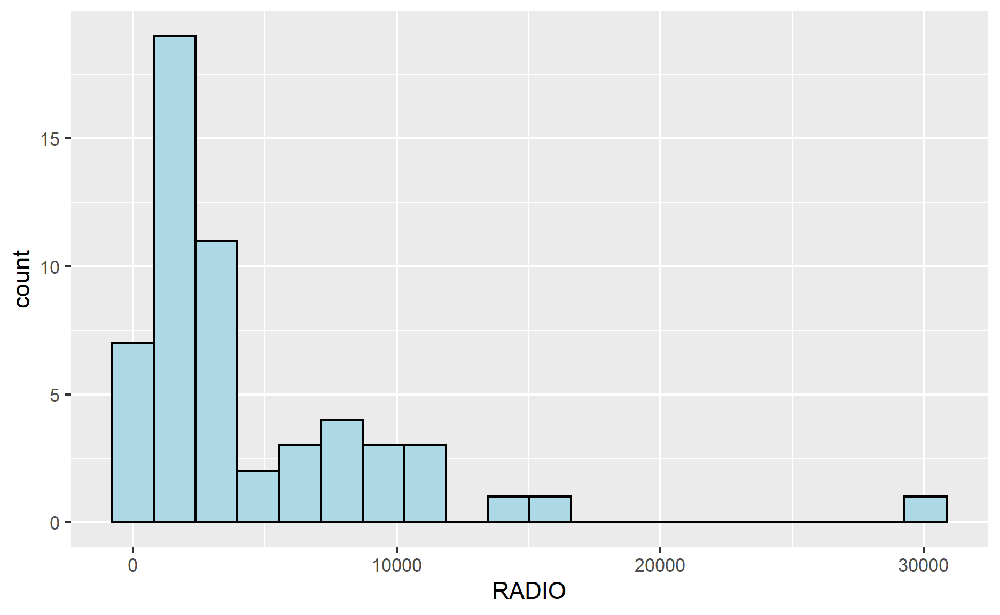
Boxplot is useful to detect if there are outliers.
ggplot(data=ict_derived, aes(x=`RADIO`)) +
geom_boxplot(color="black", fill="light blue")
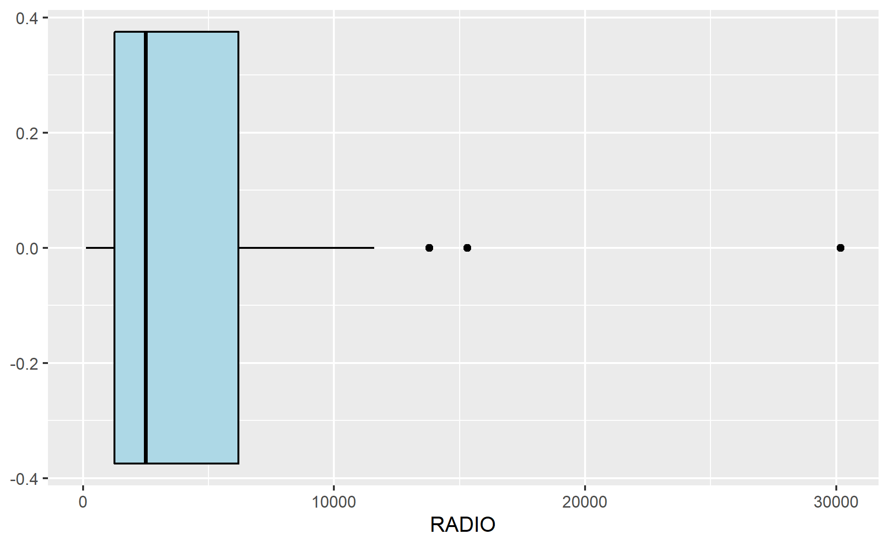
Plotting the distribution of the newly derived variables
ggplot(data=ict_derived, aes(x=`RADIO_PR`)) +
geom_histogram(bins=20, color="black", fill="light blue")
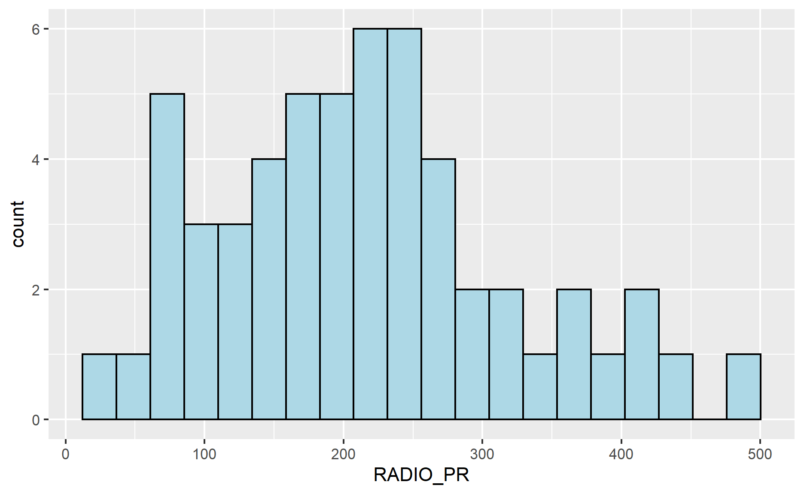
ggplot(data=ict_derived, aes(x=`RADIO_PR`)) +
geom_boxplot(color="black", fill="light blue")
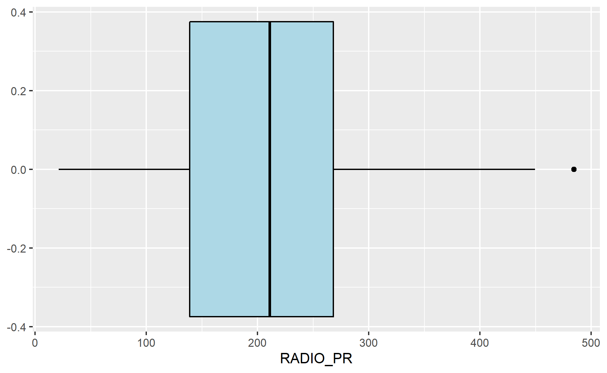
What can you observed from the distributions reveal in the histogram and boxplot?
The histogram shows that the penetration rate of radio is normally distributed as compared to the number of households owning radios. The boxplot shows that there is only 1 outlier in the penetration rate of radio.
Multiple histograms are plotted to reveal the distribution of the selected variables in the ict_derived data.frame.
Create the data visualization. It consist of two main parts. First, creating the individual histograms.
radio <- ggplot(data=ict_derived,
aes(x= `RADIO_PR`)) +
geom_histogram(bins=20,
color="black",
fill="light blue")
tv <- ggplot(data=ict_derived,
aes(x= `TV_PR`)) +
geom_histogram(bins=20,
color="black",
fill="light blue")
llphone <- ggplot(data=ict_derived,
aes(x= `LLPHONE_PR`)) +
geom_histogram(bins=20,
color="black",
fill="light blue")
mphone <- ggplot(data=ict_derived,
aes(x= `MPHONE_PR`)) +
geom_histogram(bins=20,
color="black",
fill="light blue")
computer <- ggplot(data=ict_derived,
aes(x= `COMPUTER_PR`)) +
geom_histogram(bins=20,
color="black",
fill="light blue")
internet <- ggplot(data=ict_derived,
aes(x= `INTERNET_PR`)) +
geom_histogram(bins=20,
color="black",
fill="light blue")
Next, the ggarange() function of ggpubr package is used to group these histograms together.
ggarrange(radio, tv, llphone, mphone, computer, internet,
ncol = 3,
nrow = 2)
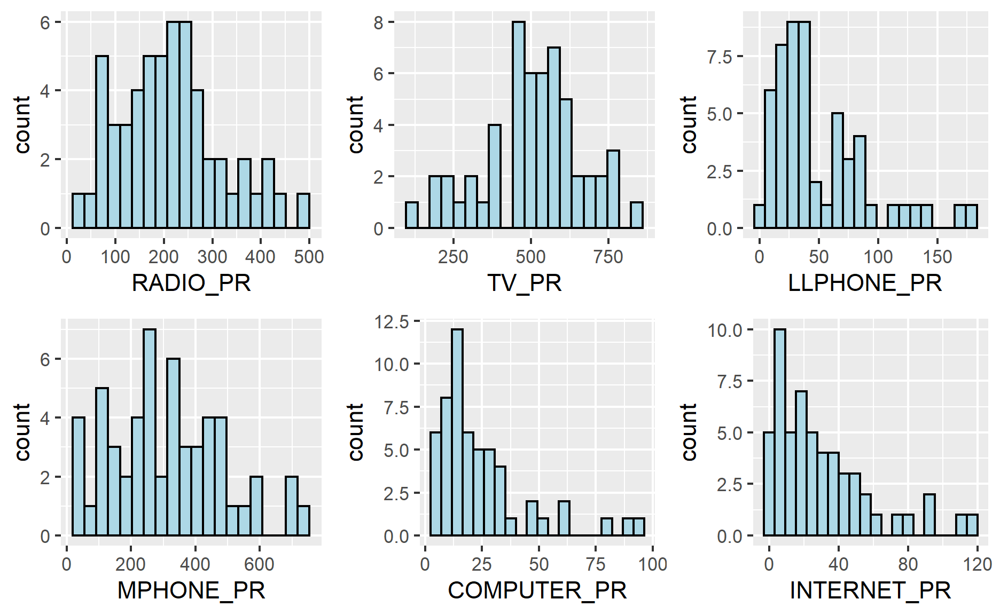
combining both the geospatial data object (i.e. shan_sf) and aspatial data.frame object (i.e. ict_derived) into one using left_join function of dplyr package. The shan_sf simple feature data.frame will be used as the base data object and the ict_derived data.frame will be used as the join table.
shan_sf <- left_join(shan_sf, ict_derived, by=c("TS_PCODE"="TS_PCODE"))
The code chunk above shows that TS_CODE field is the common field used to perform the left-join.
It is important to note that there is no new output data been created. Instead, the data fields from ict_derived data frame are now updated into the data frame of shan_sf.
Looking at the distribution of Radio penetration rate of Shan State at township level.
To prepare the choropleth by using the qtm() function of tmap package.
qtm(shan_sf, "RADIO_PR")
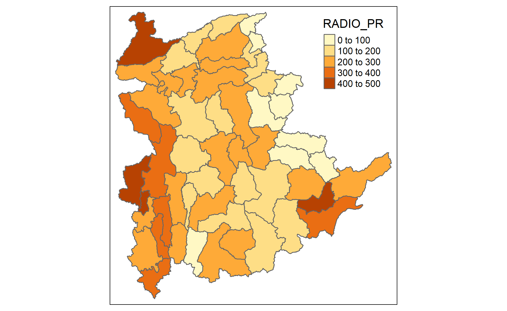
In order to reveal the distribution shown in the choropleth map above are bias to the underlying total number of households at the townships, we will create two choropleth maps, one for the total number of households (i.e. TT_HOUSEHOLDS.map) and one for the total number of household with Radio (RADIO.map) by using the code chunk below.
TT_HOUSEHOLDS.map <- tm_shape(shan_sf) +
tm_fill(col = "TT_HOUSEHOLDS",
n = 5,
style = "jenks",
title = "Total households") +
tm_borders(alpha = 0.5)
RADIO.map <- tm_shape(shan_sf) +
tm_fill(col = "RADIO",
n = 5,
style = "jenks",
title = "Number Radio ") +
tm_borders(alpha = 0.5)
tmap_arrange(TT_HOUSEHOLDS.map, RADIO.map,
asp=NA, ncol=2)
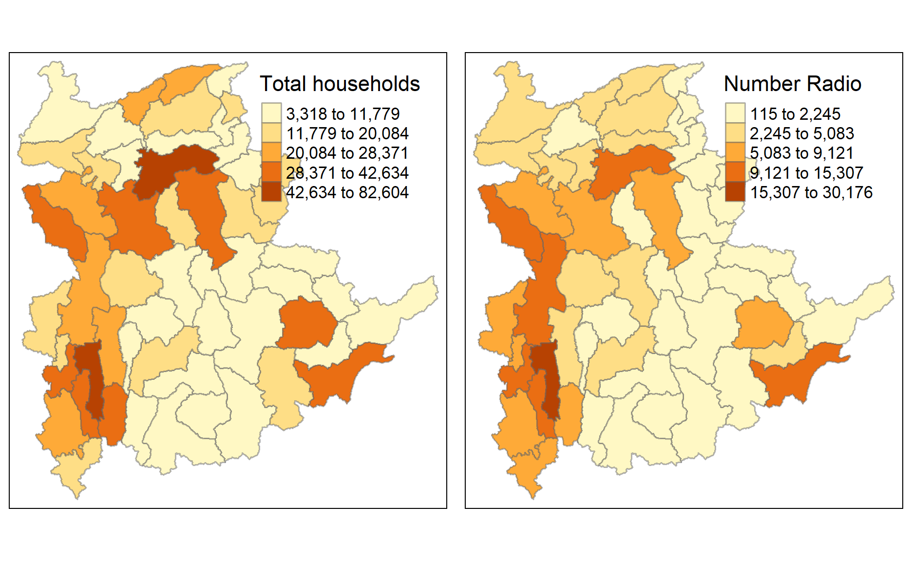
The choropleth maps above clearly show that townships with relatively larger number ot households are also showing relatively higher number of radio ownership.
Plot the choropleth maps showing the distribution of total number of households and Radio penetration rate
tm_shape(shan_sf) +
tm_polygons(c("TT_HOUSEHOLDS", "RADIO_PR"),
style="jenks") +
tm_facets(sync = TRUE, ncol = 2) +
tm_legend(legend.position = c("right", "bottom"))+
tm_layout(outer.margins=0, asp=0)
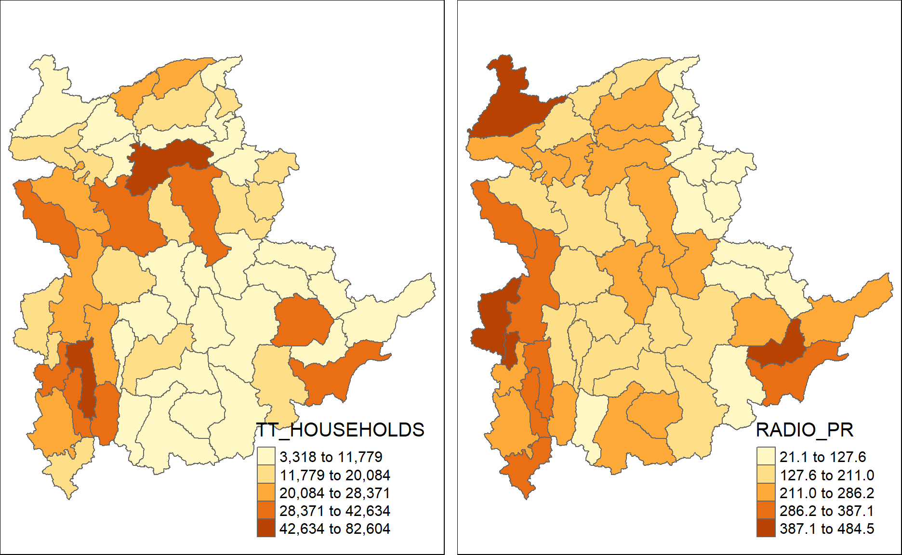
Can you identify the differences?
Ensure that the cluster variables are not highly correlated before performing cluster analysis
Use corrplot.mixed() function of corrplot package to visualise and analyse the correlation of the input variables.
cluster_vars.cor = cor(ict_derived[,12:17])
corrplot.mixed(cluster_vars.cor,
lower = "ellipse",
upper = "number",
tl.pos = "lt",
diag = "l",
tl.col = "black")
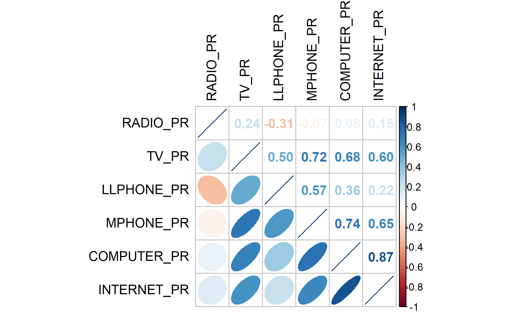
The correlation plot above shows that COMPUTER_PR and INTERNET_PR are highly correlated. This suggest that only one of them should be used in the cluster analysis instead of both.
Perform hierarchical cluster analysis. The four major steps are:
Extract the clustering variables from the shan_sf simple feature object into data.frame.
cluster_vars <- shan_sf %>%
st_set_geometry(NULL) %>%
select("TS.x", "RADIO_PR", "TV_PR", "LLPHONE_PR", "MPHONE_PR", "COMPUTER_PR")
head(cluster_vars,10)
TS.x RADIO_PR TV_PR LLPHONE_PR MPHONE_PR COMPUTER_PR
1 Mongmit 286.1852 554.1313 35.30618 260.6944 12.15939
2 Pindaya 417.4647 505.1300 19.83584 162.3917 12.88190
3 Ywangan 484.5215 260.5734 11.93591 120.2856 4.41465
4 Pinlaung 231.6499 541.7189 28.54454 249.4903 13.76255
5 Mabein 449.4903 708.6423 72.75255 392.6089 16.45042
6 Kalaw 280.7624 611.6204 42.06478 408.7951 29.63160
7 Pekon 318.6118 535.8494 39.83270 214.8476 18.97032
8 Lawksawk 387.1017 630.0035 31.51366 320.5686 21.76677
9 Nawnghkio 349.3359 547.9456 38.44960 323.0201 15.76465
10 Kyaukme 210.9548 601.1773 39.58267 372.4930 30.94709The final clustering variables list does not include variable INTERNET_PR because it is highly correlated with variable COMPUTER_PR.
Next, we need to change the rows by township name instead of row number
TS.x RADIO_PR TV_PR LLPHONE_PR MPHONE_PR
Mongmit Mongmit 286.1852 554.1313 35.30618 260.6944
Pindaya Pindaya 417.4647 505.1300 19.83584 162.3917
Ywangan Ywangan 484.5215 260.5734 11.93591 120.2856
Pinlaung Pinlaung 231.6499 541.7189 28.54454 249.4903
Mabein Mabein 449.4903 708.6423 72.75255 392.6089
Kalaw Kalaw 280.7624 611.6204 42.06478 408.7951
Pekon Pekon 318.6118 535.8494 39.83270 214.8476
Lawksawk Lawksawk 387.1017 630.0035 31.51366 320.5686
Nawnghkio Nawnghkio 349.3359 547.9456 38.44960 323.0201
Kyaukme Kyaukme 210.9548 601.1773 39.58267 372.4930
COMPUTER_PR
Mongmit 12.15939
Pindaya 12.88190
Ywangan 4.41465
Pinlaung 13.76255
Mabein 16.45042
Kalaw 29.63160
Pekon 18.97032
Lawksawk 21.76677
Nawnghkio 15.76465
Kyaukme 30.94709Notice that the row number has been replaced into the township name.
Now, we will delete the TS.x field by using the code chunk below.
RADIO_PR TV_PR LLPHONE_PR MPHONE_PR COMPUTER_PR
Mongmit 286.1852 554.1313 35.30618 260.6944 12.15939
Pindaya 417.4647 505.1300 19.83584 162.3917 12.88190
Ywangan 484.5215 260.5734 11.93591 120.2856 4.41465
Pinlaung 231.6499 541.7189 28.54454 249.4903 13.76255
Mabein 449.4903 708.6423 72.75255 392.6089 16.45042
Kalaw 280.7624 611.6204 42.06478 408.7951 29.63160
Pekon 318.6118 535.8494 39.83270 214.8476 18.97032
Lawksawk 387.1017 630.0035 31.51366 320.5686 21.76677
Nawnghkio 349.3359 547.9456 38.44960 323.0201 15.76465
Kyaukme 210.9548 601.1773 39.58267 372.4930 30.94709In general, multiple variables will be used in cluster analysis. It is not unusual their values range are different. In order to avoid the cluster analysis result is baised to clustering variables with large values, it is useful to standardise the input variables before performing cluster analysis.
normalize() of heatmaply package is used to stadardisation the clustering variables by using Min-Max method.
shan_ict.std <- normalize(shan_ict)
summary(shan_ict.std)
RADIO_PR TV_PR LLPHONE_PR MPHONE_PR
Min. :0.0000 Min. :0.0000 Min. :0.0000 Min. :0.0000
1st Qu.:0.2544 1st Qu.:0.4600 1st Qu.:0.1123 1st Qu.:0.2199
Median :0.4097 Median :0.5523 Median :0.1948 Median :0.3846
Mean :0.4199 Mean :0.5416 Mean :0.2703 Mean :0.3972
3rd Qu.:0.5330 3rd Qu.:0.6750 3rd Qu.:0.3746 3rd Qu.:0.5608
Max. :1.0000 Max. :1.0000 Max. :1.0000 Max. :1.0000
COMPUTER_PR
Min. :0.00000
1st Qu.:0.09598
Median :0.17607
Mean :0.23692
3rd Qu.:0.29868
Max. :1.00000 The values range of the Min-max standardised clustering variables are 0-1 now.
Z-score standardisation can be performed easily by using scale() of Base R.
Used to stadardise the clustering variables by using Z-score method
shan_ict.z <- scale(shan_ict)
describe(shan_ict.z)
vars n mean sd median trimmed mad min max range
RADIO_PR 1 55 0 1 -0.04 -0.06 0.94 -1.85 2.55 4.40
TV_PR 2 55 0 1 0.05 0.04 0.78 -2.47 2.09 4.56
LLPHONE_PR 3 55 0 1 -0.33 -0.15 0.68 -1.19 3.20 4.39
MPHONE_PR 4 55 0 1 -0.05 -0.06 1.01 -1.58 2.40 3.98
COMPUTER_PR 5 55 0 1 -0.26 -0.18 0.64 -1.03 3.31 4.34
skew kurtosis se
RADIO_PR 0.48 -0.27 0.13
TV_PR -0.38 -0.23 0.13
LLPHONE_PR 1.37 1.49 0.13
MPHONE_PR 0.48 -0.34 0.13
COMPUTER_PR 1.80 2.96 0.13Notice the mean and standard deviation of the Z-score standardised clustering variables are 0 and 1 respectively.
Note: describe() of psych package is used here instead of summary() of Base R because the earlier provides standard deviation.
Warning: Z-score standardisation method should only be used if we would assume all variables come from some normal distribution.**
It is a good practice to visualise their distribution graphical.
Plot the scaled Radio_PR field.
r <- ggplot(data=ict_derived,
aes(x= `RADIO_PR`)) +
geom_histogram(bins=20,
color="black",
fill="light blue")
shan_ict_s_df <- as.data.frame(shan_ict.std)
s <- ggplot(data=shan_ict_s_df,
aes(x=`RADIO_PR`)) +
geom_histogram(bins=20,
color="black",
fill="light blue") +
ggtitle("Min-Max Standardisation")
shan_ict_z_df <- as.data.frame(shan_ict.z)
z <- ggplot(data=shan_ict_z_df,
aes(x=`RADIO_PR`)) +
geom_histogram(bins=20,
color="black",
fill="light blue") +
ggtitle("Z-score Standardisation")
ggarrange(r, s, z,
ncol = 3,
nrow = 1)
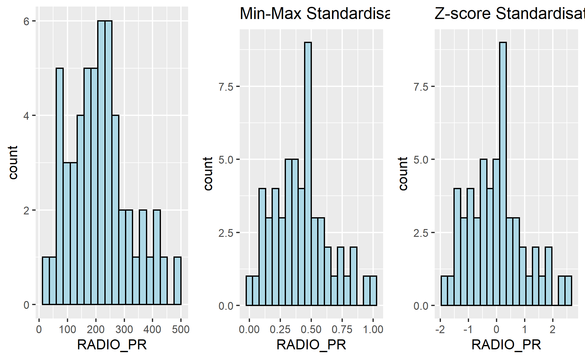
The overall distribution of the clustering variables will change after the data standardisation. Hence, it is advisable NOT to perform data standardisation if the values range of the clustering variables are not very large.
To calculate distance matrix using dist() of R.
dist() supports six distance proximity calculations, they are: euclidean, maximum, manhattan, canberra, binary and minkowski. The default is euclidean proximity matrix.
To compute the proximity matrix using euclidean method
proxmat <- dist(shan_ict, method = 'euclidean')
To list the content of proxmat for visual inspection.
proxmat
Mongmit Pindaya Ywangan Pinlaung Mabein
Pindaya 171.86828
Ywangan 381.88259 257.31610
Pinlaung 57.46286 208.63519 400.05492
Mabein 263.37099 313.45776 529.14689 312.66966
Kalaw 160.05997 302.51785 499.53297 181.96406 198.14085
Pekon 59.61977 117.91580 336.50410 94.61225 282.26877
Lawksawk 140.11550 204.32952 432.16535 192.57320 130.36525
Nawnghkio 89.07103 180.64047 377.87702 139.27495 204.63154
Kyaukme 144.02475 311.01487 505.89191 139.67966 264.88283
Muse 563.01629 704.11252 899.44137 571.58335 453.27410
Laihka 141.87227 298.61288 491.83321 101.10150 345.00222
Mongnai 115.86190 258.49346 422.71934 64.52387 358.86053
Mawkmai 434.92968 437.99577 397.03752 398.11227 693.24602
Kutkai 97.61092 212.81775 360.11861 78.07733 340.55064
Mongton 192.67961 283.35574 361.23257 163.42143 425.16902
Mongyai 256.72744 287.41816 333.12853 220.56339 516.40426
Mongkaing 503.61965 481.71125 364.98429 476.29056 747.17454
Lashio 251.29457 398.98167 602.17475 262.51735 231.28227
Mongpan 193.32063 335.72896 483.68125 192.78316 301.52942
Matman 401.25041 354.39039 255.22031 382.40610 637.53975
Tachileik 529.63213 635.51774 807.44220 555.01039 365.32538
Narphan 406.15714 474.50209 452.95769 371.26895 630.34312
Mongkhet 349.45980 391.74783 408.97731 305.86058 610.30557
Hsipaw 118.18050 245.98884 388.63147 76.55260 366.42787
Monghsat 214.20854 314.71506 432.98028 160.44703 470.48135
Mongmao 242.54541 402.21719 542.85957 217.58854 384.91867
Nansang 104.91839 275.44246 472.77637 85.49572 287.92364
Laukkaing 568.27732 726.85355 908.82520 563.81750 520.67373
Pangsang 272.67383 428.24958 556.82263 244.47146 418.54016
Namtu 179.62251 225.40822 444.66868 170.04533 366.16094
Monghpyak 177.76325 221.30579 367.44835 222.20020 212.69450
Konkyan 403.39082 500.86933 528.12533 365.44693 613.51206
Mongping 265.12574 310.64850 337.94020 229.75261 518.16310
Hopong 136.93111 223.06050 352.85844 98.14855 398.00917
Nyaungshwe 99.38590 216.52463 407.11649 138.12050 210.21337
Hsihseng 131.49728 172.00796 342.91035 111.61846 381.20187
Mongla 384.30076 549.42389 728.16301 372.59678 406.09124
Hseni 189.37188 337.98982 534.44679 204.47572 213.61240
Kunlong 224.12169 355.47066 531.63089 194.76257 396.61508
Hopang 281.05362 443.26362 596.19312 265.96924 368.55167
Namhkan 386.02794 543.81859 714.43173 382.78835 379.56035
Kengtung 246.45691 385.68322 573.23173 263.48638 219.47071
Langkho 164.26299 323.28133 507.78892 168.44228 253.84371
Monghsu 109.15790 198.35391 340.42789 80.86834 367.19820
Taunggyi 399.84278 503.75471 697.98323 429.54386 226.24011
Pangwaun 381.51246 512.13162 580.13146 356.37963 523.44632
Kyethi 202.92551 175.54012 287.29358 189.47065 442.07679
Loilen 145.48666 293.61143 469.51621 91.56527 375.06406
Manton 430.64070 402.42888 306.16379 405.83081 674.01120
Mongyang 309.51302 475.93982 630.71590 286.03834 411.88352
Kunhing 173.50424 318.23811 449.67218 141.58836 375.82140
Mongyawng 214.21738 332.92193 570.56521 235.55497 193.49994
Tangyan 195.92520 208.43740 324.77002 169.50567 448.59948
Namhsan 237.78494 228.41073 286.16305 214.33352 488.33873
Kalaw Pekon Lawksawk Nawnghkio Kyaukme
Pindaya
Ywangan
Pinlaung
Mabein
Kalaw
Pekon 211.91531
Lawksawk 140.01101 157.51129
Nawnghkio 127.74787 113.15370 90.82891
Kyaukme 79.42225 202.12206 186.29066 157.04230
Muse 412.46033 614.56144 510.13288 533.68806 434.75768
Laihka 197.34633 182.23667 246.74469 211.88187 128.24979
Mongnai 200.34668 151.60031 241.71260 182.21245 142.45669
Mawkmai 562.59200 416.00669 567.52693 495.15047 512.02846
Kutkai 204.93018 114.98048 224.64646 147.44053 170.93318
Mongton 267.87522 208.14888 311.07742 225.81118 229.28509
Mongyai 386.74701 242.52301 391.26989 319.57938 339.27780
Mongkaing 625.24500 480.23965 625.18712 546.69447 586.05094
Lashio 106.69059 303.80011 220.75270 230.55346 129.95255
Mongpan 114.69105 243.30037 228.54223 172.84425 110.37831
Matman 537.63884 368.25761 515.39711 444.05061 505.52285
Tachileik 373.64459 573.39528 441.82621 470.45533 429.15493
Narphan 463.53759 416.84901 523.69580 435.59661 420.30003
Mongkhet 465.52013 342.08722 487.41102 414.10280 409.03553
Hsipaw 212.36711 145.37542 249.35081 176.09570 163.95741
Monghsat 317.96188 225.64279 352.31496 289.83220 253.25370
Mongmao 195.18913 293.70625 314.64777 257.76465 146.09228
Nansang 124.30500 160.37607 188.78869 151.13185 60.32773
Laukkaing 427.77791 624.82399 548.83928 552.65554 428.74978
Pangsang 224.03998 321.81214 345.91486 287.10769 175.35273
Namtu 307.27427 165.02707 260.95300 257.52713 270.87277
Monghpyak 167.08436 190.93173 142.31691 93.03711 217.64419
Konkyan 444.75859 421.48797 520.31264 439.34272 393.79911
Mongping 375.64739 259.68288 396.47081 316.14719 330.28984
Hopong 264.16294 138.86577 274.91604 204.88286 218.84211
Nyaungshwe 95.66782 139.31874 104.17830 43.26545 126.50414
Hsihseng 287.11074 105.30573 257.11202 209.88026 250.27059
Mongla 260.26411 441.20998 393.18472 381.40808 241.58966
Hseni 38.52842 243.98001 171.50398 164.05304 81.20593
Kunlong 273.01375 249.36301 318.30406 285.04608 215.63037
Hopang 185.14704 336.38582 321.16462 279.84188 154.91633
Namhkan 246.39577 442.77120 379.41126 367.33575 247.81990
Kengtung 88.29335 297.67761 209.38215 208.29647 136.23356
Langkho 67.19580 219.21623 190.30257 156.51662 51.67279
Monghsu 237.34578 113.84636 242.04063 170.09168 200.77712
Taunggyi 252.26066 440.66133 304.96838 344.79200 312.60547
Pangwaun 338.35194 423.81347 453.02765 381.67478 308.31407
Kyethi 360.17247 162.43575 317.74604 267.21607 328.14177
Loilen 217.19877 181.94596 265.29318 219.26405 146.92675
Manton 560.16577 403.82131 551.13000 475.77296 522.86003
Mongyang 233.56349 363.58788 363.37684 323.32123 188.59489
Kunhing 197.63683 213.46379 278.68953 206.15773 145.00266
Mongyawng 173.43078 248.43910 179.07229 220.61209 181.55295
Tangyan 348.06617 167.79937 323.14701 269.07880 306.78359
Namhsan 385.88676 207.16559 362.84062 299.74967 347.85944
Muse Laihka Mongnai Mawkmai Kutkai
Pindaya
Ywangan
Pinlaung
Mabein
Kalaw
Pekon
Lawksawk
Nawnghkio
Kyaukme
Muse
Laihka 526.65211
Mongnai 571.97975 100.53457
Mawkmai 926.93007 429.96554 374.50873
Kutkai 592.90743 144.67198 91.15307 364.95519
Mongton 634.71074 212.07320 131.67061 313.35220 107.06341
Mongyai 763.91399 264.13364 203.23607 178.70499 188.94166
Mongkaing 995.66496 522.96309 456.00842 133.29995 428.96133
Lashio 313.15288 238.64533 270.86983 638.60773 289.82513
Mongpan 447.49969 210.76951 178.09554 509.99632 185.18173
Matman 929.11283 443.25453 376.33870 147.83545 340.86349
Tachileik 221.19950 549.08985 563.95232 919.38755 568.99109
Narphan 770.40234 392.32592 329.31700 273.75350 314.27683
Mongkhet 816.44931 324.97428 275.76855 115.58388 273.91673
Hsipaw 591.03355 128.42987 52.68195 351.34601 51.46282
Monghsat 663.76026 158.93517 125.25968 275.09705 154.32012
Mongmao 451.82530 185.99082 188.29603 485.52853 204.69232
Nansang 489.35308 78.78999 92.79567 462.41938 130.04549
Laukkaing 149.26996 507.39700 551.56800 882.51110 580.38112
Pangsang 460.24292 214.19291 204.25746 484.14757 228.33583
Namtu 659.16927 185.86794 209.35473 427.95451 225.28268
Monghpyak 539.43485 293.22640 253.26470 536.71695 206.61627
Konkyan 704.86973 351.75354 328.82831 339.01411 310.60810
Mongping 744.44948 272.82761 202.99615 194.31049 182.75266
Hopong 648.68011 157.48857 91.53795 302.84362 73.45899
Nyaungshwe 505.88581 201.71653 169.63695 502.99026 152.15482
Hsihseng 677.66886 175.89761 142.36728 329.29477 128.21054
Mongla 256.80556 315.93218 354.10985 686.88950 388.40984
Hseni 381.30567 204.49010 216.81639 582.53670 229.37894
Kunlong 547.24297 122.68682 202.92529 446.53763 204.54010
Hopang 377.44407 230.78652 243.00945 561.24281 263.31986
Namhkan 238.67060 342.43665 370.05669 706.47792 392.48568
Kengtung 330.08211 258.23950 272.28711 632.54638 279.19573
Langkho 413.64173 160.94435 174.67678 531.08019 180.51419
Monghsu 633.21624 163.28926 84.11238 332.07962 62.60859
Taunggyi 250.81471 425.36916 448.55282 810.74692 450.33382
Pangwaun 541.97887 351.78203 312.13429 500.68857 321.80465
Kyethi 757.16745 255.83275 210.50453 278.85535 184.23422
Loilen 560.43400 59.69478 58.41263 388.73386 131.56529
Manton 941.49778 458.30232 391.54062 109.08779 361.82684
Mongyang 389.59919 229.71502 260.39387 558.83162 285.33223
Kunhing 533.00162 142.03682 110.55197 398.43973 108.84990
Mongyawng 422.37358 211.99976 275.77546 620.04321 281.03383
Tangyan 736.93741 224.29176 180.37471 262.66006 166.61820
Namhsan 778.52971 273.79672 218.10003 215.19289 191.32762
Mongton Mongyai Mongkaing Lashio Mongpan
Pindaya
Ywangan
Pinlaung
Mabein
Kalaw
Pekon
Lawksawk
Nawnghkio
Kyaukme
Muse
Laihka
Mongnai
Mawkmai
Kutkai
Mongton
Mongyai 159.79790
Mongkaing 365.50032 262.84016
Lashio 347.11584 466.36472 708.65819
Mongpan 200.31803 346.39710 563.56780 172.33279
Matman 303.04574 186.95158 135.51424 628.11049 494.81014
Tachileik 608.76740 750.29555 967.14087 311.95286 411.03849
Narphan 215.97925 248.82845 285.65085 525.63854 371.13393
Mongkhet 223.22828 104.98924 222.60577 534.44463 412.17123
Hsipaw 90.69766 177.33790 423.77868 290.86435 179.52054
Monghsat 150.98053 127.35225 375.60376 377.86793 283.30992
Mongmao 206.57001 335.61300 552.31959 214.23677 131.59966
Nansang 199.58124 288.55962 542.16609 184.47950 144.77393
Laukkaing 604.66190 732.68347 954.11795 334.65738 435.58047
Pangsang 210.77938 343.30638 548.40662 236.72516 140.23910
Namtu 308.71751 278.02761 525.04057 365.88437 352.91394
Monghpyak 258.04282 370.01575 568.21089 262.09281 187.85699
Konkyan 248.25265 287.87384 380.92091 485.51312 365.87588
Mongping 119.86993 65.38727 257.18572 454.52548 318.47482
Hopong 106.21031 124.62791 379.37916 345.31042 239.43845
Nyaungshwe 219.72196 327.13541 557.32112 201.58191 137.29734
Hsihseng 194.64317 162.27126 411.59788 369.00833 295.87811
Mongla 411.06668 535.28615 761.48327 179.95877 253.20001
Hseni 286.75945 408.23212 648.04408 79.41836 120.66550
Kunlong 270.02165 299.36066 539.91284 295.23103 288.03320
Hopang 273.50305 408.73288 626.17673 170.63913 135.62913
Namhkan 414.53594 550.62819 771.39688 173.27153 240.34131
Kengtung 329.38387 460.39706 692.74693 59.85893 142.21554
Langkho 236.70878 358.95672 597.42714 115.18145 94.98486
Monghsu 107.04894 154.86049 400.71816 325.71557 216.25326
Taunggyi 508.40925 635.94105 866.21117 195.14541 319.81385
Pangwaun 257.50434 394.07696 536.95736 362.45608 232.52209
Kyethi 222.52947 137.79420 352.06533 447.10266 358.89620
Loilen 176.16001 224.79239 482.18190 268.92310 207.25000
Manton 310.20581 195.59882 81.75337 646.66493 507.96808
Mongyang 295.60023 414.31237 631.91325 209.33700 194.93467
Kunhing 114.03609 238.99570 465.03971 255.10832 137.85278
Mongyawng 375.22688 445.78964 700.98284 172.70139 275.15989
Tangyan 198.88460 109.08506 348.56123 429.84475 340.39128
Namhsan 196.76188 77.35900 288.66231 472.04024 364.77086
Matman Tachileik Narphan Mongkhet Hsipaw
Pindaya
Ywangan
Pinlaung
Mabein
Kalaw
Pekon
Lawksawk
Nawnghkio
Kyaukme
Muse
Laihka
Mongnai
Mawkmai
Kutkai
Mongton
Mongyai
Mongkaing
Lashio
Mongpan
Matman
Tachileik 890.12935
Narphan 312.05193 760.29566
Mongkhet 203.02855 820.50164 217.28718
Hsipaw 344.45451 576.18780 295.40170 253.80950
Monghsat 313.59911 677.09508 278.21548 167.98445 121.78922
Mongmao 501.59903 472.95568 331.42618 375.35820 185.99483
Nansang 458.06573 486.77266 398.13308 360.99219 120.24428
Laukkaing 903.72094 325.06329 708.82887 769.06406 569.06099
Pangsang 506.29940 481.31907 316.30314 375.58139 205.04337
Namtu 416.65397 659.56458 494.36143 355.99713 229.44658
Monghpyak 470.46845 444.04411 448.40651 462.63265 237.67919
Konkyan 392.40306 730.92980 158.82353 254.24424 296.74316
Mongping 201.65224 727.08969 188.64567 113.80917 168.92101
Hopong 291.84351 632.45718 294.40441 212.99485 62.86179
Nyaungshwe 460.91883 445.81335 427.94086 417.08639 169.92664
Hsihseng 304.02806 658.87060 377.52977 256.70338 136.54610
Mongla 708.17595 347.33155 531.46949 574.40292 373.47509
Hseni 564.64051 354.90063 474.12297 481.88406 231.48538
Kunlong 468.27436 595.70536 413.07823 341.68641 205.10051
Hopang 573.55355 403.82035 397.85908 451.51070 248.72536
Namhkan 715.42102 295.91660 536.85519 596.19944 382.79302
Kengtung 613.01033 295.90429 505.40025 531.35998 284.08582
Langkho 518.86151 402.33622 420.65204 428.08061 183.05109
Monghsu 308.13805 605.02113 311.92379 247.73318 58.55724
Taunggyi 778.45810 150.84117 684.20905 712.80752 462.31183
Pangwaun 523.43600 540.60474 264.64997 407.02947 298.12447
Kyethi 233.83079 728.87329 374.90376 233.25039 195.17677
Loilen 406.56282 573.75476 354.79137 284.76895 98.04789
Manton 59.52318 910.23039 280.26395 181.33894 359.60008
Mongyang 585.61776 448.79027 401.39475 445.40621 267.10497
Kunhing 403.66587 532.26397 281.62645 292.49814 90.77517
Mongyawng 601.80824 432.10118 572.76394 522.91815 294.70967
Tangyan 242.78233 719.84066 348.84991 201.49393 167.69794
Namhsan 180.09747 754.03913 316.54695 170.90848 194.47928
Monghsat Mongmao Nansang Laukkaing Pangsang
Pindaya
Ywangan
Pinlaung
Mabein
Kalaw
Pekon
Lawksawk
Nawnghkio
Kyaukme
Muse
Laihka
Mongnai
Mawkmai
Kutkai
Mongton
Mongyai
Mongkaing
Lashio
Mongpan
Matman
Tachileik
Narphan
Mongkhet
Hsipaw
Monghsat
Mongmao 247.17708
Nansang 201.92690 164.99494
Laukkaing 626.44910 404.00848 480.60074
Pangsang 256.37933 57.60801 193.36162 408.04016
Namtu 231.78673 365.03882 217.61884 664.06286 392.97391
Monghpyak 356.84917 291.88846 227.52638 565.84279 315.11651
Konkyan 268.25060 281.87425 374.70456 635.92043 274.81900
Mongping 140.95392 305.57166 287.36626 708.13447 308.33123
Hopong 100.45714 244.16253 167.66291 628.48557 261.51075
Nyaungshwe 286.37238 230.45003 131.18943 520.24345 257.77823
Hsihseng 153.49551 311.98001 193.53779 670.74564 335.52974
Mongla 429.00536 216.24705 289.45119 202.55831 217.88123
Hseni 331.22632 184.67099 136.45492 391.74585 214.66375
Kunlong 202.31862 224.43391 183.01388 521.88657 258.49342
Hopang 317.64824 78.29342 196.47091 331.67199 92.57672
Namhkan 455.10875 223.32205 302.89487 196.46063 231.38484
Kengtung 383.72138 207.58055 193.67980 351.48520 229.85484
Langkho 279.52329 134.50170 99.39859 410.41270 167.65920
Monghsu 137.24737 242.43599 153.59962 619.01766 260.52971
Taunggyi 562.88102 387.33906 365.04897 345.98041 405.59730
Pangwaun 343.53898 187.40057 326.12960 470.63605 157.48757
Kyethi 190.50609 377.89657 273.02385 749.99415 396.89963
Loilen 118.65144 190.26490 94.23028 535.57527 207.94433
Manton 317.15603 503.79786 476.55544 907.38406 504.75214
Mongyang 312.64797 91.06281 218.49285 326.19219 108.37735
Kunhing 165.38834 103.91040 128.20940 500.41640 123.18870
Mongyawng 364.40429 296.40789 191.11990 454.80044 336.16703
Tangyan 144.59626 347.14183 249.70235 722.40954 364.76893
Namhsan 169.56962 371.71448 294.16284 760.45960 385.65526
Namtu Monghpyak Konkyan Mongping Hopong
Pindaya
Ywangan
Pinlaung
Mabein
Kalaw
Pekon
Lawksawk
Nawnghkio
Kyaukme
Muse
Laihka
Mongnai
Mawkmai
Kutkai
Mongton
Mongyai
Mongkaing
Lashio
Mongpan
Matman
Tachileik
Narphan
Mongkhet
Hsipaw
Monghsat
Mongmao
Nansang
Laukkaing
Pangsang
Namtu
Monghpyak 346.57799
Konkyan 478.37690 463.39594
Mongping 321.66441 354.76537 242.02901
Hopong 206.82668 267.95563 304.49287 134.00139
Nyaungshwe 271.41464 103.97300 432.35040 319.32583 209.32532
Hsihseng 131.89940 285.37627 383.49700 199.64389 91.65458
Mongla 483.49434 408.03397 468.09747 512.61580 432.31105
Hseni 327.41448 200.26876 448.84563 395.58453 286.41193
Kunlong 233.60474 357.44661 329.11433 309.05385 219.06817
Hopang 408.24516 304.26577 348.18522 379.27212 309.77356
Namhkan 506.32466 379.50202 481.59596 523.74815 444.13246
Kengtung 385.33554 221.47613 474.82621 442.80821 340.47382
Langkho 305.03473 200.27496 386.95022 343.96455 239.63685
Monghsu 209.64684 232.17823 331.72187 158.90478 43.40665
Taunggyi 518.72748 334.17439 650.56905 621.53039 513.76415
Pangwaun 517.03554 381.95144 263.97576 340.37881 346.00673
Kyethi 186.90932 328.16234 400.10989 187.43974 136.49038
Loilen 194.24075 296.99681 334.19820 231.99959 124.74445
Manton 448.58230 502.20840 366.66876 200.48082 310.58885
Mongyang 413.26052 358.17599 329.39338 387.80686 323.35704
Kunhing 296.43996 250.74435 253.74202 212.59619 145.15617
Mongyawng 262.24331 285.56475 522.38580 455.59190 326.59925
Tangyan 178.69483 335.26416 367.46064 161.67411 106.82328
Namhsan 240.95555 352.70492 352.20115 130.23777 132.70541
Nyaungshwe Hsihseng Mongla Hseni Kunlong
Pindaya
Ywangan
Pinlaung
Mabein
Kalaw
Pekon
Lawksawk
Nawnghkio
Kyaukme
Muse
Laihka
Mongnai
Mawkmai
Kutkai
Mongton
Mongyai
Mongkaing
Lashio
Mongpan
Matman
Tachileik
Narphan
Mongkhet
Hsipaw
Monghsat
Mongmao
Nansang
Laukkaing
Pangsang
Namtu
Monghpyak
Konkyan
Mongping
Hopong
Nyaungshwe
Hsihseng 225.80242
Mongla 347.60273 478.66210
Hseni 130.86310 312.74375 226.82048
Kunlong 285.13095 231.85967 346.46200 276.19175
Hopang 247.19891 370.01334 147.02444 162.80878 271.34451
Namhkan 333.32428 492.09476 77.21355 212.11323 375.73885
Kengtung 177.75714 370.72441 202.45004 66.12817 317.14187
Langkho 128.26577 276.27441 229.01675 66.66133 224.52741
Monghsu 173.82799 97.82470 424.51868 262.28462 239.89665
Taunggyi 325.09619 528.14240 297.09863 238.19389 471.29032
Pangwaun 352.92324 433.06326 319.18643 330.70182 392.45403
Kyethi 288.06872 84.04049 556.02500 388.33498 298.55859
Loilen 206.40432 158.84853 338.67408 227.10984 166.53599
Manton 488.79874 334.87758 712.51416 584.63341 479.76855
Mongyang 294.29500 382.59743 146.66661 210.19929 247.22785
Kunhing 189.97131 220.15490 306.47566 206.47448 193.77551
Mongyawng 218.12104 309.51462 315.57550 173.86004 240.39800
Tangyan 284.14692 70.27241 526.80849 373.07575 268.07983
Namhsan 315.91750 125.74240 564.02740 411.96125 310.40560
Hopang Namhkan Kengtung Langkho Monghsu
Pindaya
Ywangan
Pinlaung
Mabein
Kalaw
Pekon
Lawksawk
Nawnghkio
Kyaukme
Muse
Laihka
Mongnai
Mawkmai
Kutkai
Mongton
Mongyai
Mongkaing
Lashio
Mongpan
Matman
Tachileik
Narphan
Mongkhet
Hsipaw
Monghsat
Mongmao
Nansang
Laukkaing
Pangsang
Namtu
Monghpyak
Konkyan
Mongping
Hopong
Nyaungshwe
Hsihseng
Mongla
Hseni
Kunlong
Hopang
Namhkan 146.18632
Kengtung 164.29921 175.63015
Langkho 134.24847 224.40029 107.16213
Monghsu 301.84458 431.32637 316.91914 221.84918
Taunggyi 329.95252 257.29147 186.28225 288.27478 486.91951
Pangwaun 206.98364 310.44067 337.48335 295.38434 343.38498
Kyethi 440.48114 567.86202 444.26274 350.91512 146.61572
Loilen 242.89326 364.90647 282.22935 184.10672 131.55208
Manton 577.52046 721.86149 631.99123 535.95620 330.76503
Mongyang 69.25859 167.72448 217.08047 175.35413 323.95988
Kunhing 172.96164 314.92119 245.95083 146.38284 146.78891
Mongyawng 290.51360 321.21112 203.87199 186.11584 312.85089
Tangyan 412.22167 542.64078 429.95076 332.02048 127.42203
Namhsan 440.51555 576.42717 466.20497 368.20978 153.22576
Taunggyi Pangwaun Kyethi Loilen Manton
Pindaya
Ywangan
Pinlaung
Mabein
Kalaw
Pekon
Lawksawk
Nawnghkio
Kyaukme
Muse
Laihka
Mongnai
Mawkmai
Kutkai
Mongton
Mongyai
Mongkaing
Lashio
Mongpan
Matman
Tachileik
Narphan
Mongkhet
Hsipaw
Monghsat
Mongmao
Nansang
Laukkaing
Pangsang
Namtu
Monghpyak
Konkyan
Mongping
Hopong
Nyaungshwe
Hsihseng
Mongla
Hseni
Kunlong
Hopang
Namhkan
Kengtung
Langkho
Monghsu
Taunggyi
Pangwaun 497.61245
Kyethi 599.57407 476.62610
Loilen 455.91617 331.69981 232.32965
Manton 803.08034 510.79265 272.03299 419.06087
Mongyang 374.58247 225.25026 453.86726 246.76592 585.70558
Kunhing 429.98509 229.09986 278.95182 130.39336 410.49230
Mongyawng 287.73864 475.33116 387.71518 261.75211 629.43339
Tangyan 592.65262 447.05580 47.79331 196.60826 271.82672
Namhsan 631.49232 448.58030 68.67929 242.15271 210.48485
Mongyang Kunhing Mongyawng Tangyan
Pindaya
Ywangan
Pinlaung
Mabein
Kalaw
Pekon
Lawksawk
Nawnghkio
Kyaukme
Muse
Laihka
Mongnai
Mawkmai
Kutkai
Mongton
Mongyai
Mongkaing
Lashio
Mongpan
Matman
Tachileik
Narphan
Mongkhet
Hsipaw
Monghsat
Mongmao
Nansang
Laukkaing
Pangsang
Namtu
Monghpyak
Konkyan
Mongping
Hopong
Nyaungshwe
Hsihseng
Mongla
Hseni
Kunlong
Hopang
Namhkan
Kengtung
Langkho
Monghsu
Taunggyi
Pangwaun
Kyethi
Loilen
Manton
Mongyang
Kunhing 188.89405
Mongyawng 304.21734 295.35984
Tangyan 421.06366 249.74161 377.52279
Namhsan 450.97869 270.79121 430.02019 63.67613hclust() employed agglomeration method to compute the cluster. Eight clustering algorithms are supported, they are: ward.D, ward.D2, single, complete, average(UPGMA), mcquitty(WPGMA), median(WPGMC) and centroid(UPGMC).
Performing hierarchical cluster analysis using ward.D method. The hierarchical clustering output is stored in an object of class hclust which describes the tree produced by the clustering process.
hclust_ward <- hclust(proxmat, method = 'ward.D')
Plotting the tree by using plot() of R Graphics.
plot(hclust_ward, cex = 0.6)
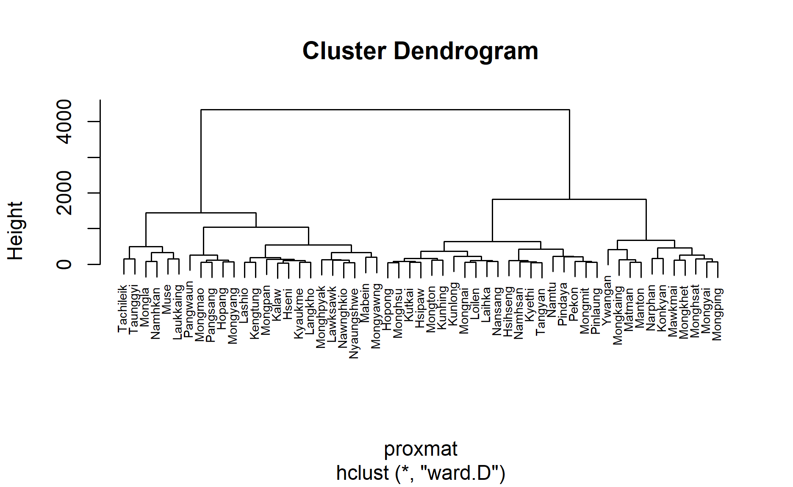
One of the challenge in performing hierarchical clustering is to identify stronger clustering structures. The issue can be solved by using use agnes() function of cluster package. It functions like hclus(), however, with the agnes() function you can also get the agglomerative coefficient, which measures the amount of clustering structure found (values closer to 1 suggest strong clustering structure).
Compute the agglomerative coefficients of all hierarchical clustering algorithms
m <- c( "average", "single", "complete", "ward")
names(m) <- c( "average", "single", "complete", "ward")
ac <- function(x) {
agnes(shan_ict, method = x)$ac
}
map_dbl(m, ac)
average single complete ward
0.8131144 0.6628705 0.8950702 0.9427730 Ward’s method provides the strongest clustering structure among the four methods assessed. Hence, in the subsequent analysis, only Ward’s method will be used.
Another technical challenge face by data analyst in performing clustering analysis is to determine the optimal clusters to retain.
There are three commonly used methods to determine the optimal clusters, they are: